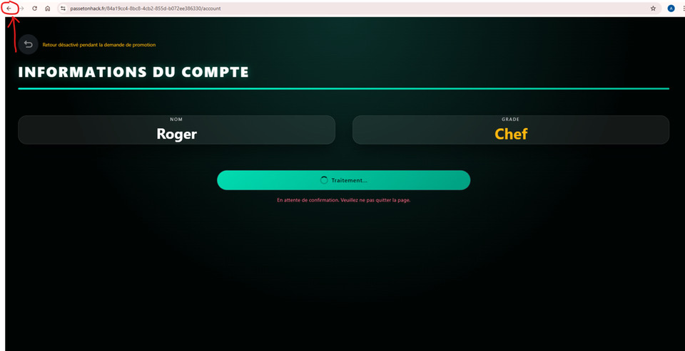
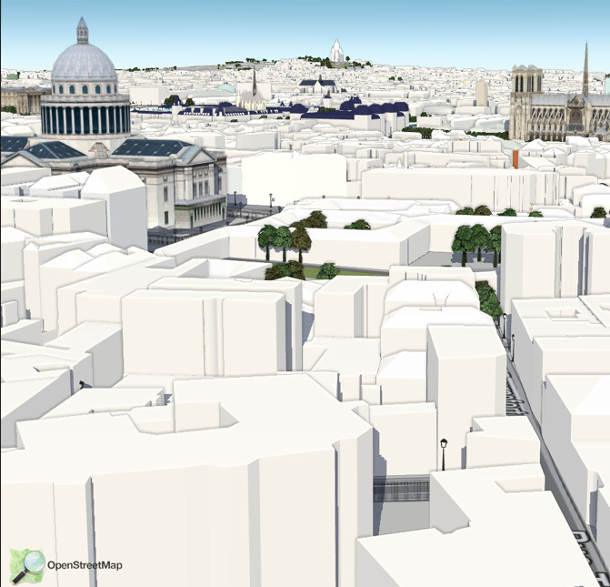

Portfolio Jawad Atlassi
PROBLÉMATIQUE 1 - les sites internet sont-il réellement sécurisés ?
Description du challenge
Trouver 4 code à trois chiffres car le site etait pirater.
Étapes de résolution :
fouiller le code source de la page pour trouver les solutions avec les programmes situé dans la page repartion des tache avec mon camarade l’un trouver les 2 premier code et le 2e les dernier
Outil utilisée : chat gpt, vs code
Mes difficultés recontrée :
Décrypter les programmes complexes comme le “js fuck”.
ce que j' ai appris :
Pour le grand oral
je pourrais refléchir sur la manière dont j' ai résolu ce defie en repondant a la question posé : les sites internet sont-il réellement sécurisée
PROBLÉMATIQUE 2 - ??
Description du challenge
changer le grade de roger pour permettre d’avoir d’autres fonctionnalité et donc trouver le le code secret
Étapes de résolution :
essayer de trouver dans le code java mais la reponse n’etait pas la. j’ai donc juste cliquer en haut a gauche pour changer page ce qui m’a permis de changer de grade automatiquement

Outil utilisée : VS Code, chat gpt
ce que j' ai appris :
PROBLÉMATIQUE 3 - se localiser dans l’espace à l'aide de nouvelle technologie ?
Description du challenge
trouver une rue.
Étapes de résolution :
prendre en capture d’écran l’image puis la mettre ce google lens pour situer l'endroit et donc trouver la rue.

Outil utilisée : chat gpt, vs code
ce que j' ai appris :
Pour le grand oral
je pourrais refléchir sur la manière dont j' ai résolu ce defie en repondant a la question posé : se localiser dans l’espace à l'aide de nouvelle technologie ?